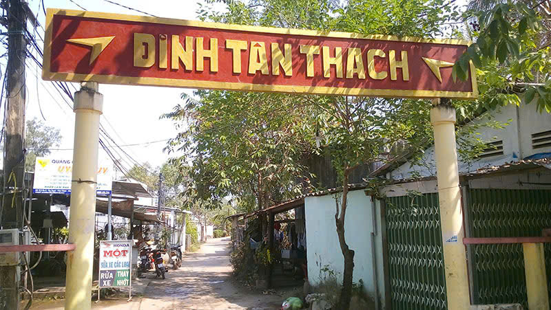
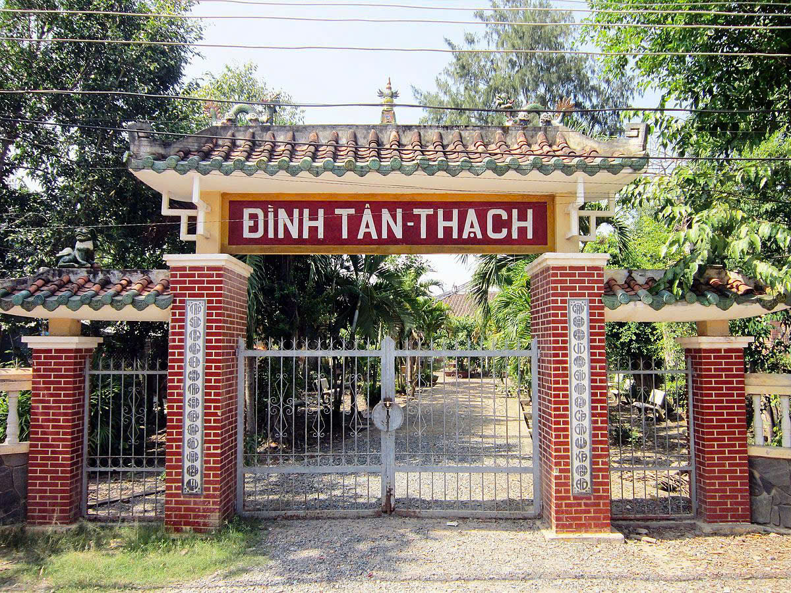
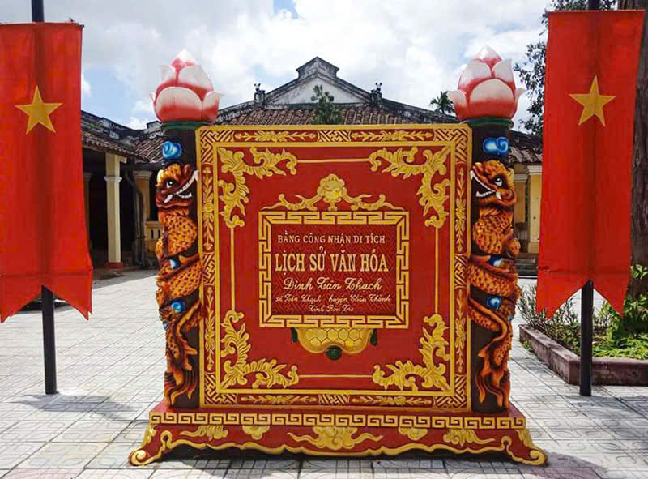
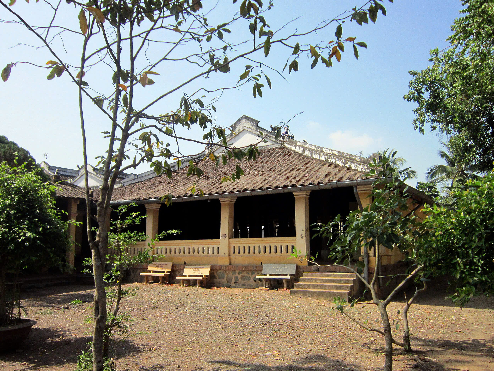
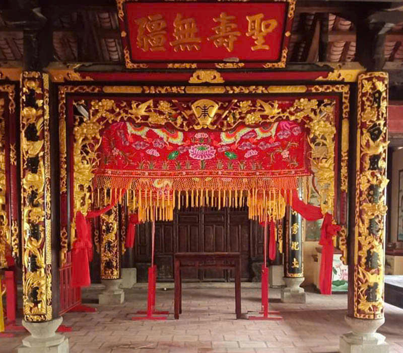
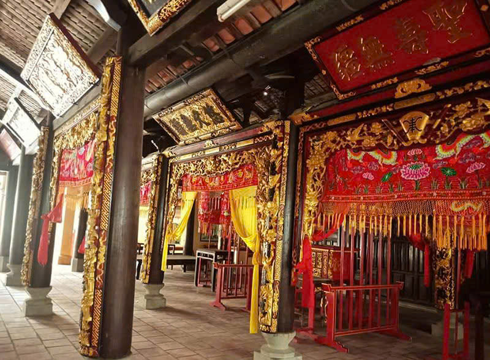
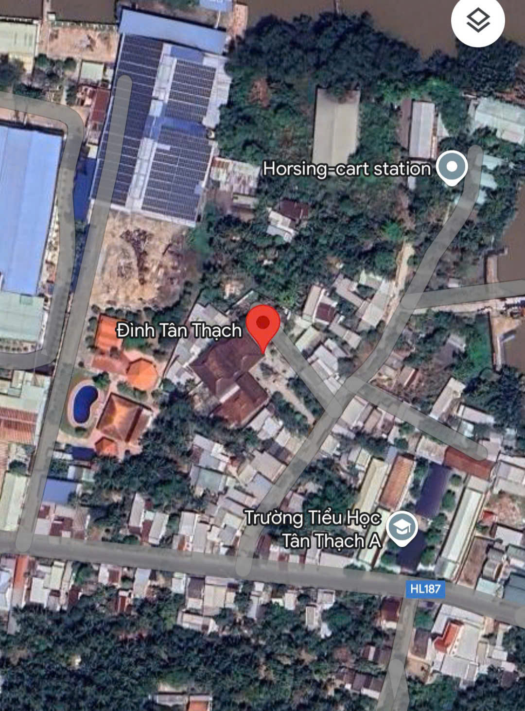

Đình Tân Thạch nằm bên bờ sông Mê Kông, gần khu vực cù lao Thới An - cồn Phụng - cồn Quy. Không khí tại đây rất trong lành, tĩnh lặng, thu hút rất nhiều khách thập phương đến tham quan, chiêm bái. Vị trí: Ấp 9, Xã Tân Thạch, Huyện Châu Thành, Tỉnh Bến Tre.
Đình Tân Thạch được xây dựng vào năm 1841, lúc bấy giờ có tên gọi là đình Thạch Hồ. Đình do ông Nguyễn Quý Bằng là người đã chủ động hiến đất và vận động bà con nhân dân trong vùng tham gia đóng góp để xây nên nơi thờ Thành Hoàng làng. Cấu trúc đình làng theo hình chữ Tam (三) với ba gian chính là Võ ca, Võ quy và Chánh điện liền kề nhau.
Ngày 28/12/2001, Bộ Văn hóa, Thể thao và Du lịch đã ký quyết định công nhận Đình Tân Thạch là Di tích Kiến trúc Nghệ thuật cấp Quốc gia. Đây chính là minh chứng cho những giá trị lịch sử, văn hóa, nghệ thuật lâu đời mà ngôi đình này gìn giữ qua gần hai thế kỷ.
Đình Tân Thạch có diện tích khuôn viên khoảng hơn 7.600m2. Trong đó, diện tích mặt bằng của đình là 1.250m2. Đình được xây dựng với lối kiến trúc đậm chất truyền thống, mái đình lợp ngói âm dương, trang trí bằng những hình ảnh quen thuộc như lưỡng long tranh châu, cá chép hóa rồng và bát tiên.
- Cổng tam quan của Đình Tân Thạch được xây dựng bằng gạch và xi măng, phần mái lợp ngói, trên mái là hình tượng hai con rồng bằng sứ trắng. Cổng thiết kế thành ba cửa với cửa chính ở giữa. Theo quan niệm dân gian thì cổng chính dành cho sư sãi và vua chúa, quan lại đến đình dâng hương. Còn cửa phụ dành cho khách thập phương, bên trái là nam, bên phải là nữ.
- Hai bên mái cổng đình trang trí bằng con lân làm từ gốm men màu xanh đang trong tư thế ngồi chầu. Bên cạnh là hai câu đối đắp nổi, thể hiện mong muốn quốc thái dân an, mưa thuận gió hòa. Xung quanh tường rào bằng đá xanh, trang trí thêm chấn song hình con tiện.
- Trước sân Đình Tân Thạch còn có bức bình phong lớn hình Thần Nông từ vật liệu đá, cao khoảng 3m, chạm nổi hình rồng đang vươn mình bay lên. Bên dưới là con hổ ẩn hiện trong những dải hoa văn hình núi, mây, cây cối. Đây là bức họa Long bàn Hổ cứ, Rồng cuộn Hổ ngồi mà chúng ta thường thấy khi tham quan các đình, chùa cổ Việt Nam. Hai bên bình phong là hai câu đối bằng tiếng Hán ghi “Hổ cư sơn lâm phù xã tắc” và “Long du nguyệt điện tráng sơn hà”.
- Bên trái bình phong là miếu thờ nhỏ của Sơn quân, thờ Thần Hổ linh thiêng. Bên phải là miếu thờ thần Thổ địa và thần Hà bá, theo quan niệm dân gian là thần cai quản đất đai và cai quản sông nước. Ngoài ra, trong miếu còn thờ 3 hòn đá theo tín ngưỡng thờ Neak Tà của người Khmer.
Bao gồm các gian chính: Võ ca, Võ quy, Chánh điện với những bức hoành phi, bao lam tinh xảo.
- Gian Võ ca: Đây là gian gồm ba căn hai chái, nơi tổ chức các hoạt động xây chầu đại bội vào những dịp lễ lớn như cúng Kỳ Yên.
- Gian Võ quy: Gian này gồm năm căn hai chái, xây theo lối kiến trúc nhà xuyên trính với các thanh xà ngang nối xuyên qua từng cột. Gian Võ quy đặt một bàn hương án thờ Phật, đồng thời cũng là nơi hành văn lễ tế thần.
- Gian Chính điện: Phía trước Chính điện đặt một bàn thờ, bên phải là hai bài vị ghi: “Nam Hải Cự Tộc Ngọc Lân Thần” và “Thủy Đức nương nương”. Còn bên trái bàn thờ là hai bài vị “Chúa xứ Thánh Mẫu nương nương” và “Thái giám Bạch mã mộc trụ ngũ phương tôn thần”. Chính điện được xây theo kiểu nhà ba căn, hai chái thoáng mát, rộng rãi. Gian giữa thờ Quốc tổ Hùng Vương, kế đến là thờ Chủ tịch Hồ Chí Minh. Gian bên đặt khánh thờ thần Thành hoàng với bức tượng sơn son thếp vàng, tả ban và hữu ban đều đặt bàn thờ tiền hiền, hậu hiền.
- Nhà tiền vãng: Nối liền với chính điện của Đình Tân Thạch là ngôi nhà trù (hay còn gọi là nhà bếp). Ngay bên cạnh nhà trù là nhà tiền vãng - Nơi thờ các vị tiền hiền khai khẩn đất đai, hậu hiền có công với dân với nước. Nhà tiền vãng bị phá hoại trong giai đoạn chiến tranh, sau khi hòa bình lập lại thì người dân địa phương mới cùng nhau xây mới. Nhà tiền vãng với phần mái lợp ngói vảy cá, bên trong đặt ba khánh thờ, ở giữa là bàn thờ “Tiền vãng trinh linh”.
Giống với Đình Bình Hòa Bến Tre, bên cạnh kiến trúc ấn tượng, Đình Tân Thạch còn lưu giữ những hiện vật có giá trị lâu đời như:
- 6 đạo sắc phong thần được triều đình nhà Nguyễn ban cho Đình Tân Thạch. Trong đó có 4 đạo sắc phong dưới thời Vua Thiệu Trị (1845), 2 đạo sắc phong dưới thời Vua Tự Đức (1850).
- 4 bộ lư mắt tre tinh xảo.
- 7 lư trầm bằng đồng thau với màu sắc đẹp mắt.
- 13 bức hoành phi khổng lồ được chạm nổi, sơn son thếp vàng rực rỡ.
- 13 bao lam thành vọng bằng gỗ quý, đặt trên cột chính ở gian Võ ca, Võ quy và Chính điện. Các hiện vật có niên đại khác nhau, đôi chỗ hư hại trong quá trình trùng tu. Tuy nhiên nhìn chung, tất cả đều được chạm trổ công phu, thể hiện tài hoa và bàn tay khéo léo của các thế hệ nghệ nhân thời bấy giờ.
- Các bức hoành phi, câu đối với nội dung ca ngợi công đức của Thành hoàng làng, thể hiện sự biết ơn và tấm lòng ngưỡng vọng của người dân đối với những công ơn của các vị thần.
Đình cách trung tâm Bến Tre khoảng 12km. Bạn có thể đi theo lộ trình qua Đại lộ Đồng Khởi, Quốc lộ 60, Trần Văn Ơn, HL187. Đường đi cụ thể như sau:
- Từ trung tâm thành phố, bạn đi đường Đại lộ Đồng Khởi khoảng 2.5km, băng qua bùng binh Đông tây và vòng xoay Phú Khương.
- Khi đến vòng xoay Tân Thành thì bạn đi theo lối ra thứ nhất để vào Quốc lộ 60.
- Đi khoảng 2.5km, gặp ngã ba thì bạn rẽ vào đường Trần Văn Ơn.
- Bạn cứ thẳng theo đường Trần Văn Ơn khoảng 5km, khi gặp ngã tư Nhà thuốc Long Châu thì rẽ phải vào đường HL187/Phà Rạch Miễu.
- Bạn đi khoảng 600m thì gặp ngã ba Trụ sở ấp An Thị, tại đây bạn rẽ trái vào khoảng 150m thì sẽ gặp Đình Tân Thạch bên tay trái.
